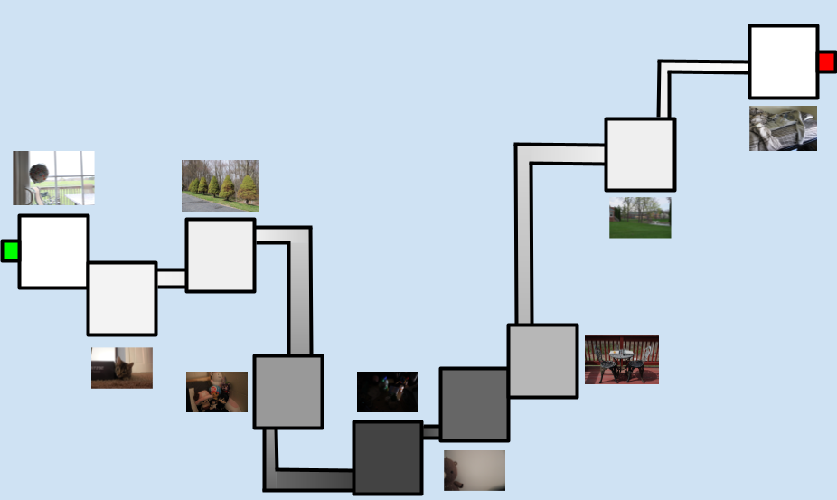

The exhibit is completely accessible to people with disabilities. It has no flashing lights and is located entirely on one floor so there is no stairs. Pathways are wide to accommodate wheelchairs and other mobility devices. Seating is available in every room for those who need it. Noise-canceling headphones are also provided if the music becomes overstimulating.
The exhibit follows a gallery style layout inspired by Dia Beacon, with a more hallway-like orientation. Much like Dia Beacon, The Weight of Light is set on flat land, surronded more by nature than city. All images are projected onto the walls, drawing inspiration from the work of many different artists. Other design elements include a temperture shift, warmer at the ends and cooler in the middle, and a variety of objects placed throughout each room. For example, one room may contain stuffed toys that are positioned to face the visitors. These objects keep a consistent visual style with the projected images.
